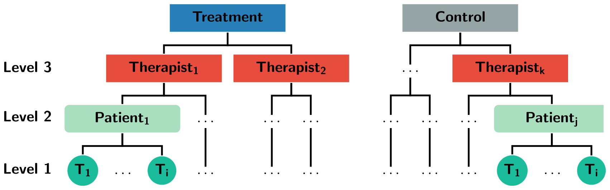

3 Therapist Effects
A major challenge when evaluating and designing psychological interventions is the possibility that some therapists consistently perform better than others (Lambert 2013; Norcross, Beutler, and Levant 2006), which introduces a correlation among subjects belonging to the same therapist. This has been extensively covered for cross-sectional analysis (Baldwin et al. 2011; Wampold and Serlin 2000). However, with the increased popularity of longitudinal analyses using linear mixed-effects models, these old issues return in a new light.
Among methodologists and statisticians, there is a broad consensus that clustering due to therapists need to be accounted for, and that ignoring a level of nesting will increase the risk of committing a type I error. This was pointed out by Meehl already back in 1955, and Martindale back in 1978, who called it the “therapist-as-fixed-effect fallacy”. Moreover, Kiesler (1966) also pointed out the unreasonable assumption of uniform therapist outcomes. Not surprisingly, the reporting of clustering effects is part of the CONSORT statement for non-pharmacological treatments (Grant et al. 2018). Unfortunately, reviews show that investigators mostly do not report therapist effects, and worse, do not adjust their statistical analyses. Martindale (1978) reviewed 33 psychotherapy studies and concluded that few accounted for clustering. Crits-christoph and Mintz (1991) reviewed 140 articles in the Journal of Consulting and Clinical Psychology between 1980 and 1990 and found that two-thirds of the studies completely ignored the therapist factor. The journal Psychotherapy Research dedicated a whole special issue to therapist effects (Hill 2006). A more recent study also points out the problems with this type of treatment-related clustering, and that it still continues to be ignored (Walwyn and Roberts 2015). Similarly, when these individual RCTs are included in a meta-analysis, the problem of therapist effect also applies to the meta-analysis, leading to type I errors that are higher than the specified \(\alpha\)-level (Owen et al. 2015; Walwyn and Roberts 2015).
3.1 How Much Variance is Accounted for by Therapists?
Most studies that have investigated therapist effects find that only a small proportion of the variance in the outcomes after treatment is attributable to the therapists. For efficacy studies, most estimates range from 5 to 10%, with larger numbers being found in naturalistic studies (Baldwin et al. 2011; Kim, Wampold, and Bolt 2006). In a simple cross-sectional analysis, the proportion of variance at the therapist level is also the intra-class correlation (ICC), which gives the correlation between any two randomly picked patients belonging to the same therapist (Raudenbush and Bryk 2002).
3.2 The Design Effect
Small ICCs does not mean that the impact on the type I errors is small. The effect of ignoring this multilevel hierarchy on a parameter’s standard error (SE) is often called the design effect (Snijders 2005), which is defined as: \[D_{eff}=\frac{SE_{correct}}{SE_{incorrect}}.\] Which tells us by how much we need to multiply the incorrect standard errors to get the correct standard errors. For a cross-sectional analysis with therapists nested within treatments, the design effect is: \[D_{eff} = \sqrt{(1+ (\bar{n_2}-1)\rho_1}.\] Where \(\rho_1\) is the intra-class correlation (ICC) at the therapist level, and \(\bar{n_2}\) is the average number of subjects per therapist.
3.3 Therapist or Treatment?
Many authors have discussed the problems of disentangling therapist effects from treatment effects (Chambless and Hollon 2012; Elkin 1999). Walwyn and Roberts (2010) discussed the threats of therapist effects to a study’s internal and external validity. They noted that when therapists are not randomized to treatments, it is possible that therapist characteristics differ between treatments. In a sense, treatment and therapist effects are confounded. What is being evaluated is the treatment “package” (Elkin et al. 1985), i.e., both the treatment approach as well as the types of therapists that prefer one treatment orientation. Similar problems have been discussed in medicine, for example, when surgeons are nested within treatments. Devereaux et al. (2005) called this an expertise-based trial. Moreover, it is also possible that therapist effects vary between treatments, which could be caused by some treatments being harder to learn, or that less standardized treatments increase the variance between therapists.
3.4 Nested Versus Crossed
If therapists deliver both of the two treatments being compared, then it is possible to disentangle some of the therapist effects from the treatment effects (Walwyn and Roberts 2010; Wampold and Serlin 2000). If therapists only deliver one of the treatments, we have a nested design, as shown in Figure 3.1. If therapists deliver both treatments, we have a crossed design. Both designs have their problems and merits. In a nested design, it is not possible to rule out selection bias, therapists nested in Treatment A might overall be more skilled, thus confounding the treatment effect. It also not possible to separate the main effect of therapists, from the possible therapist \(\times\) treatment-interaction (Schielzeth and Nakagawa 2013). Besides making it harder to interpret the therapist effects, this also leads to a loss of power compared to the crossed design (de Jong, Moerbeek, and van der Leeden 2010). However, in a crossed design, it gets increasingly hard to train therapists in two different therapies simultaneously, and the risk of contamination is evident (Chambless and Hollon 2012). It is also unlikely that therapists can carry out both treatments with equal skill and commitment, thus making the nested design more realistic in psychotherapy research (Falkenström et al. 2013; Wampold and Serlin 2000).

Figure 3.1: An example of a three-level hierarchy where therapists are nested within treatments.
3.6 Random or Fixed Effects?
Many authors have discussed whether therapists should be viewed as a random or fixed effect (Crits-Christoph, Tu, and Gallop 2003; Siemer and Joormann 2003; Wampold and Serlin 2000). The discussion has mainly revolved around generalizability; fixed effects concerns the therapists in the study, whereas random effects treat the therapists as a sample from a larger population. Proponents of fixed effects often refer to the fact that therapists seldom are a random sample from a larger population (Siemer and Joormann 2003). Whereas authors arguing for treating therapists as a random factor, point out that we want to make inference about a broader population (Crits-Christoph, Tu, and Gallop 2003). This view has been criticized, by the argument that generalizing to a broader population should be based on external validity, and not on a specific statistical model (Kahan and Morris 2013). It has also been argued that “random sampling” is of marginal importance, “as a (large) number of draws from any cross-section will most likely appear random” (Dieleman and Templin 2014, 4). It should be noted, that under the fixed effects model, statistical inference is made conditional on the included therapists not changing. Which means that from a frequentist perspective, the hypothetical “repeated sampling” would be performed with identical therapists. Whereas, under the random effects model, repeated sampling involves sampling new therapists from the estimated distribution of therapists. Thus, the assumed data-generating process (DGP) and the inference is substantially different.
Furthermore, Andrew Gellman called the terms “fixed” and “random” effects ill-defined (Gelman 2005), and prefers to use the term varying instead of random (Gelman and Hill 2006). In the context of multilevel analysis, Gelman instead differentiates between, complete pooling, no pooling, and partial pooling. Complete pooling ignores all therapist clustering, thus explicitly assuming that all therapists have precisely the same overall success. No pooling corresponds to a fixed effects analysis, which assumes that therapists differ overall in their outcomes and that the outcome from one therapist tells us absolutely nothing about another therapist, i.e., no information is shared between clusters. Partial pooling, which is what standard multilevel/linear mixed-effects models do, assumes that therapists have different outcomes, but that we can share some information between therapists. Partial pooling “borrows information” across therapists, by shrinking estimates closer to the overall mean.
3.7 Therapist Effects and Longitudinal Analyses
Despite the vast number of articles published regarding therapist effects, few have focused on therapist effects in longitudinal designs. Moreover, the ICC, design effect, and power function gets more complicated when therapists are allowed to have varying slopes over time and generally depends on several nuisance parameters (Hedeker and Gibbons 2006). Thus, recommendations from methodological texts based on cross-sectional data do not necessarily hold. Although, de Jong, Moerbeek, and van der Leeden (2010) considered power for a three-level model with therapists, patients, and repeated measures, they only briefly focused on random slopes at the therapist level. More importantly, they did not investigate the consequences of ignoring therapist effects.